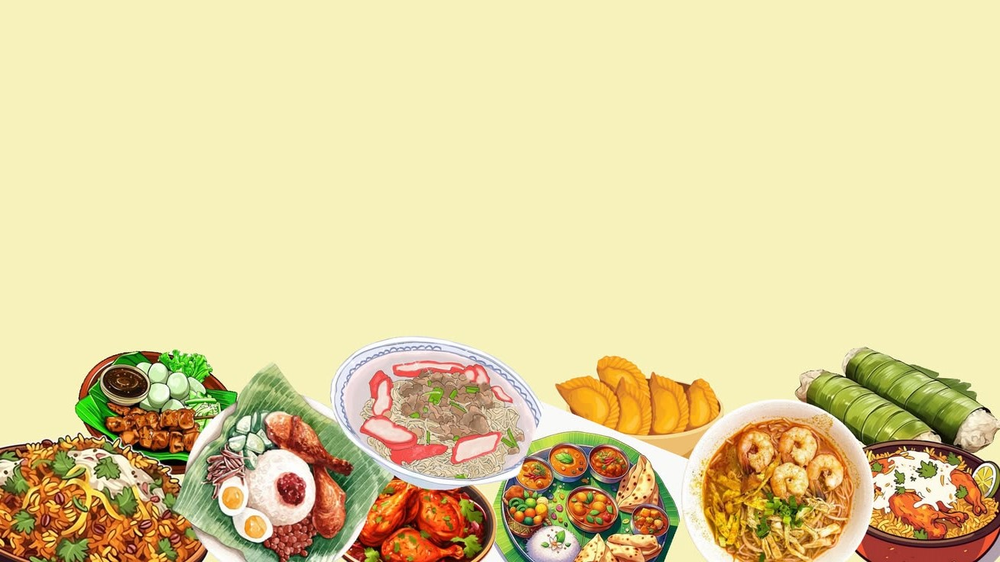

Kenali beragam makanan khas Indonesia yang memiliki cita rasa, bahan, dan cerita unik dari berbagai daerah.
Jelajahi Kuliner
Masakan khas Indonesia adalah masakan dengan ciri khas yang dimiliki negara Indonesia, Indonesia memiliki banyak pulau, suku dan ras yang berbeda pula. Maka makanan khas yang dimiliki Indonesia pun sangat beragam dan banyak dari berbagai daerah. Di web ini kami akan memperkenalkan 6 masakan daerah khas indonesia yang banyak disukai dari berbagai kalangan.
Kuliner Nusantara merupakan website yang dibuat untuk memperkenalkan berbagai makanan khas Indonesia dari berbagai daerah. Indonesia memiliki kekayaan budaya dan kuliner yang beragam, sehingga setiap daerah memiliki makanan dengan cita rasa dan ciri khasnya masing-masing.
Melalui website ini, pengunjung dapat mengenal beberapa makanan khas Indonesia seperti Pempek, Kerak Telor, Karedok, Rendang, Sate Bandeng, dan Gudeg.
Banyak masakan Indonesia menggunakan berbagai rempah yang memberikan aroma dan cita rasa khas.
Setiap daerah memiliki makanan pokok dan olahan yang berbeda sesuai dengan bahan yang tersedia.
Keberagaman daerah dan budaya membuat Indonesia memiliki banyak jenis makanan khas.
Jangan ragu mencoba makanan khas dari daerah yang berbeda untuk mengenal cita rasa Indonesia lebih luas.
Jika tidak terbiasa dengan makanan pedas, pilih tingkat kepedasan yang sesuai agar tetap nyaman menikmatinya.
Mengetahui asal makanan membuat kita lebih memahami budaya dan keberagaman daerah di Indonesia.
Indonesia memiliki kekayaan kuliner yang berbeda-beda di setiap daerah. Perbedaan budaya, bahan makanan, dan tradisi membuat setiap masakan memiliki cita rasa yang khas.
Setiap daerah di Indonesia memiliki makanan khas dengan karakter dan cita rasa yang berbeda.
Perpaduan rempah dan bahan lokal menghasilkan berbagai rasa yang menjadi ciri khas kuliner Indonesia.
Makanan khas Indonesia tidak hanya menjadi hidangan, tetapi juga bagian dari budaya dan tradisi masyarakat.